تگها
comment
برای درج توضیحات در سند html1 از تگ زیر استفاده میشود که متن داخل آن کاملا نادیده گرفته خواهد شد:
<!--
function displayMsg() {
alert("Hello World!")
}
//
-->هدف از درج توضیحات غیر فعال کردن موقت یک قطعه کد یا درج توضیحاتی برای افزایش خوانایی کد در آینده برای خود کد نویس یا سایر اعضای تیم است.
doctype
یک دستورالعمل برای مشخص کردن نسخه ی یک صفحه یا فایل HTML است.دستورالعمل Doctype مخفف Document Type بوده و در واقع این تگ نوع سند را به مرورگر ها معرفی می کند.یعنی به مرورگر ها مختلفی مثل کروم، فایرفاکس و… می فهماند صفحه وبی که در حال خواندن و نمایش آن هستند یک نوع سند HTML یا XHTML است.
مثلا تگ aside در نسخه های پایین تر از HTML5 تعریف نشده است. یا تگهای acronym و applet در HTML5 تعریف نشدهاند. کنسرسیوم جهانی وب یعنی w3c، استاندارد های مختلفی از زبان پایه ی وب یعنی HTML را ارائه نموده که هر کدام از آنها در مقایسه با هم هرچند اندک دارای تفاوت هایی هستند. این موضوع سبب میشود که مرورگر های وب، در برخورد با صفحات مختلف نتوانند در حالت عادی، استاندارد صحیح را شناسایی کنند و لذا به جای پردازش متناسب با استاندارد اصلی، عملیات پیش فرض خود را برای نمایش صفحه انجام میدهند که این موضوع ممکن است با آنچه مورد نظر شما بوده باشد، فرق کند و یا از مرورگری به مرورگر دیگر، صفحات شما به چند شکل مختلف پردازش شوند. لذا برای جلوگیری از بروز چنین مشکلاتی، از دستور راهنمای DOCTYPE استفاده میشود تا نوع نسخه HTML استفاده شده را برای مرورگر مشخص کند. کنسرسیوم جهانی وب (W3C) نسب به استفاده از این کد توصیه اکید دارد. مخصوصا در صفحاتی که از نسخه HTML 4.01 یا XHTML 1.0 استفاده می کنند. لذا به خاطر رعایت استانداردهای توصیه شده W3C می توان گفت که استفاده از آن تقریبا الزامی است، در غیر این صورت علاوه بر اینکه ممکن است صفحات، به درستی در مرورگرهای مختلف نمایش داده نشوند، از نظر اعتبار سنجی (Validation) نیز معتبر نیستند، که این امر در امتیاز و رتبه سایت یا وبلاگ در موتورهای جستجو تاثیر منفی خواهد داشت.
<!DOCTYPE html>به مرورگر و موتور جستجو اعلام می کند که سایت از html5 استفاده می کند.
html
بیانگر ریشه اصلی فایل html است.همه تگ ها غیر از تگ DOCTYPE در این تگ قرار می گیرند. خاصیت و ویژگی lang در آن درج میشود و بیان می کند زیان سایت چیست. که این اعلان برای مرورگر و موتور های جستجو اهمیت دارد.
head
حاوی اطلاعات metadata 2 ی سایت است و بین تگ های html و body قرار میگیرد و اطلاعات آن در سایت نمایش داده نمیشود. تگ هایی که در آن استفاده می شوند:
<title>، <style>، <base>، <link>، <meta>، <script>، <noscript>.
title
عنوان صفحه که روی سربرگ مرورگر نیز نمایش داده میشود.در مبحث SEO3 این عنوان اهمیت زیادی دارد و در تعیین چیدمان نتایج تولید شده توسط موتورهای جستجو موثر است و هنگام نمایش سطر با همین عنوان نمایش داده میشود. وقنی سایت به favorite bar کاربر اضافه میشود برای نام پیش فرض از آن استفاده میشود. توصیه میشود بیش از یک یا دو کلمه برای عنوان استفاده کنید.
<title>عنوان صفحه</title>موتورهای جستجو بین ۵۰ تا ۶۰ کاراکتر عنوان را نمایش خواهند داد. عنوانی طولانی تر این مقدار انتخاب نکنید. عنوان را فقط رشته ای از حروف نتخاب نکنید چون باعث افت در موقعیت سایت در نتایج جستجوها خواهد شد
base
عبارتی که در آن قرار می گیرد پایه همه مسیرهای ناکامل موجود در سند خواهد شد. مثلا:
<head>
<base href="https://www.w3schools.com/" target="_blank">
</head>
<body>
<img src="images/stickman.gif" width="24" height="39" alt="Stickman">
<a href="tags/tag_base.asp">HTML base Tag</a>
</body>تصویر از مسیر زیر بارگذاری خواهد شد:
https://www.w3schools.com/images/stickman.gif
اگر تگ base اعلان نشده باشد مسیر پیش فرض پوشه ای است که فایل html در آن قرار گرفته است.
link
یک تگ خالی است و فقط شامل خاصیت است.باعث برقراری ارتباط بین سند جاری با یک سند خارجی خواهد شد. خاصیت های آن:
| Property | description |
|---|---|
| CrossOrigin | مشخص می کند با درخواست های CORS چگونه برخورد شود. |
| rel=“icon” | مقدار icon یا favicon کمک می کند آیکون سایت که در سربرگ مرورگر نمایش داده میشود و اگر کاربر سایت را به favorite اضافه کند در نوار علایق با این آیکون نمایش داده میشود.مقدار apple-touch-icon کمک می کند در صورتی که در سیستم های iOS سایت add to desktop شد این امکان را داشته باشیم که آیکونی با رزولوشن بالاتری برای آن در نظر بگیریم تا در کنار بقیه آیکون های دسکتاپ شمایل بهتری داشته باشد |
| rel=“stylesheet” | حاوی فایل css برای قالب بندی سایت است. |
| rel=“preload” | اعلام می کند مرورگر باید قبل از نمایش سایت این اطلاعات را دریافت کند و در cache نگهداری کند |
| Type | وقتی rel=“Stylesheet” باشد مقدار type را برابر text/css قرار می دهیم. |
مثال:
<link rel="icon" href="/favicon.ico" type="image/x-icon">
<link rel="stylesheet" type="text/css" href="styles.css">
<link rel="preload" href="style.css" as="style" />
<link rel="preload" href="main.js" as="script" />Meta
معمولا از آن برای اعلان کاراکترها استفاده می کنیم:
<meta charset="utf-8" />کد فوق در HTML 4 به شکل زیر نوشته می شد:
<meta http-equiv="content-type" content="text/html; charset=UTF-8">همچنین برای مباحث SEO سایت می توان از این تگ با کلید واژه content برای اعلام کلمات کلیدی مرتبط با محتوا سایت استفاده کرد.
<meta name="viewport" content="width=device-width, initial-scale=1.0">تگ فوق به responsive شدن سایت و نمایش صحیح آن در اندازه های مختلف صفحه نمایش از قبیل تبلت و گوشی موبایل و تلویزیون … کمک می کند.
با تگ زیر می توان نویسنده صفحه را اعلان کرد:
<meta name="author" content="John Doe">با تگ زیر می توان کلمات کلیدی سایت را به موتورهای جستجو اعلان کرد:
<meta name="keywords" content="HTML, CSS, JavaScript">تگ زیر توضیحی درباره چیستی سایت ارایه می کند:
<meta name="description" content="Free Web tutorials">خاصیت دیگری به اسم http-equiv وجود دارد که کارکردهای خاصی دارد:
<meta http-equiv="refresh" content="30">کد فوق باعث میشود سایت هر ۳۰ ثانیه یک بار به طور خودکار refresh شود.اگر بعد از ۳۰ یک سمی کالمن بگذاریم و بعد از آن آدرس یک سایت را بنویسیم بعد از سپری شدن مدت مشخص شده کاربر به سایت تعیین شده هدایت خواهد شد:
<meta http-equiv="refresh" content="30;URL='http://test.com/'" />از خاصیت زیر برای کنترل رفتار مرورگر در cache کردن محتویات قابل ذخیره سازی نظیر تصاویر می توان استفاده کرد که چند حالت دارد:
<meta http-equiv="Cache-control" content="public">
<meta http-equiv="Cache-control" content="private">
<meta http-equiv="Cache-control" content="no-cache">
<meta http-equiv="Cache-control" content="no-store">پس از قرار دادن مقدار cash-control در مقابل ویژگی http-equiv باید در مقابل ویژگی content از مقدار:
- public (جهت استفاده از cash به اشتراک گذاری شده عمومی)
- private (جهت استفاده از cash به اشتراک گذاری شده خصوصی)
- no-cash (جهت عدم استفاده از cash)
- no-store (جهت استفاده از cash و عدم ذخیره سازی توسط cash) استفاده نماییم.
به کمک خاصیت Set-Cookie برای http-equiv می توانیم اطلاعاتی از بازدید کننده را ذخیره کنیم مشروط به اینکه از قالب زیر استفاده کنیم:
CONTENT=”name=data; path=path; expires=Day, DD-MMM-YY HH:MM:SS ZON”
مثلا:
<meta http-equiv="Set-Cookie" content="ACCOUNT=9983373;
path=/; expires=Thursday, 20-May-09 00:15:00 GMT">Body
بدنه اصلی سایت در این تگ قرار می گیرد.هر سند html می تواند حاوی تنها یک تگ body باشد.
a
Anchor برای ایجاد یک hyperlink استفاده میشود تا کاربر با کلیک روی آن به سایت دیگری منتقل شود یا به قسمت دیگری از صفحه هدایت شود.مقصد به کمک خاصیت href مشخص میشود.
<a href="https://www.w3schools.com">Visit W3Schools.com!</a>خاصیت کاربردی دیگر این تگ target است که مشخص می کند مقصد در همان صفحه باز شود یا در سربرگ جدیدی از مرورگر باز شود مقدار آن می توانند یکی از اینها باشد:
_blank _parent _self _top
کد زیر مقصد را در سربرگ جدیدی باز می کند:
<a href="https://www.w3schools.com" target="_blank">Visit W3Schools.com!</a>در صورتی که مقصد در همان سایت باشد از # استفاده می کنیم:
<a href="#section2">Go to Section 2</a>
<p>In my younger and more vulnerable years</p>
<h2 id="section2">Section 2</h2>
<p>In my younger and more vulnerable years</p>#می تواند به ID یکی از المنتهای صفحه اشاره کند. اگر # خالی استفاده کنیم به سر صفحه منتقل می شویم.
می توان برای تماس تلفنی از طریق نرم افزار های VoIP روی سیستم بازدید کننده نیز از Anchor استفاده کرد:
<a href="tel:+982191000000">1000000</a>می توان برای ارسال ایمیل نیز از آن استفاده کرد:
<a href="mailto:mjid.ahmadi@gmail.com?subject=Hi Majid&body=Hello dear, How are you following table demonstrates preprices we can deal">Send Email to Majid</a>h
از h1 تا h6 برای تعریف heading یا سرفصل برای متن استفاده میشود.
<h1>عنوان اصلی سطح ۱ - بزرگترین تیتر</h1>
<h2>عنوان فرعی سطح ۲ - سرفصلهای اصلی</h2>
<h3>عنوان سطح ۳ - زیرسرفصلها</h3>
<h4>عنوان سطح ۴ - جزئیات بیشتر</h4>
<h5>عنوان سطح ۵ - توضیحات تخصصی</h5>
<h6>عنوان سطح ۶ - کوچکترین تیتر</h6>عنوان اصلی سطح ۱ - بزرگترین تیتر
عنوان فرعی سطح ۲ - سرفصلهای اصلی
عنوان سطح ۳ - زیرسرفصلها
عنوان سطح ۴ - جزئیات بیشتر
عنوان سطح ۵ - توضیحات تخصصی
عنوان سطح ۶ - کوچکترین تیتر
نکات مهم سئو (SEO) و دسترسیپذیری:
سلسلهمراتب (Hierarchy): ترتیب منطقی را رعایت کنید (h1 بزرگترین و h6 کوچکترین).
تعداد h1: در هر صفحه فقط یک
<h1>داشته باشید (برای عنوان اصلی).از پرش (Skip): از h1 به h4 نپرید؛ ترتیب را رعایت کنید.
کاربری: از h فقط برای تیترها استفاده کنید، نه برای بزرگ کردن متن!
p
برای تعریف پاراگراف جدید استفاده میشود. مرورگر به طور خودکار قبل و بعد از این تگ یک خط خالی نمایش خواهد داد.
div
مخفف division برای بخش بندی صفحه سایت و به عنوان کانتینری برای اجزای سایت استفاده میشود تا بتوان روی آن محتویات از طریق style یا جاوا اسکریپت اعمال خاصی انجام داد. مثال غیر کاربردی(جلوتر درباره بخش بندی اصولی صحبت خواهیم کرد):
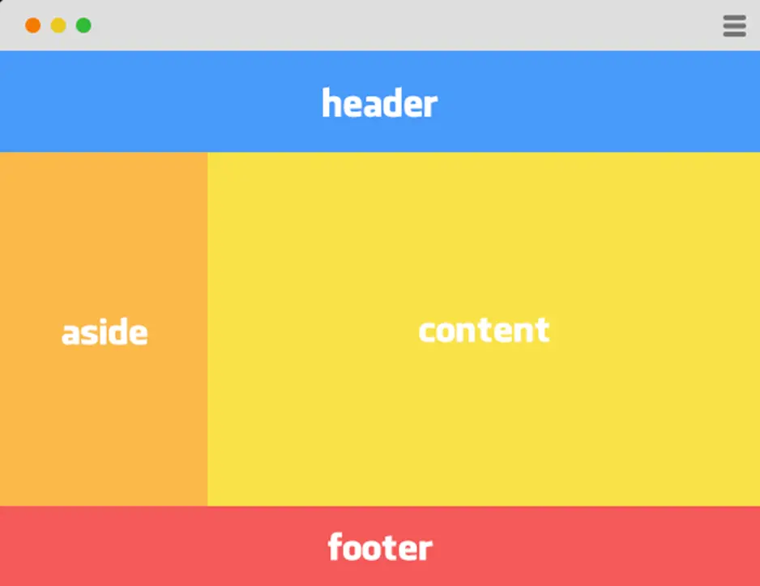
<!DOCTYPE html>
<html lang="fa">
<head>
<meta charset="UTF-8">
<meta name="viewport" content="width=device-width, initial-scale=1.0">
<title>Layout</title>
<style>
* {
margin: 0;
padding: 0;
box-sizing: border-box;
}
.container {
width: 100%;
min-height: 100vh;
}
/* Header */
.header {
height: 100px;
background: #4e8fe6;
}
/* Main Section */
.main {
display: flex;
min-height: 500px;
}
.aside {
width: 25%;
background: #f0b64b;
}
.content {
flex: 1;
background: #ead846;
}
/* Footer */
.footer {
height: 100px;
background: #f25a5a;
}
.header,
.aside,
.content,
.footer {
color: white;
font-weight: bold;
display: flex;
align-items: center;
justify-content: center;
font-size: 42px;
}
</style>
</head>
<body>
<div class="container">
<div class="header">
header
</div>
<div class="main">
<div class="aside">
aside
</div>
<div class="content">
content
</div>
</div>
<div class="footer">
footer
</div>
</div>
</body>
</html>تگ های مفهومی
طراحان سایت و برنامه نویسان صفحه را به کمک تگ های header و main و footer به چند بخش تقسیم می کنند و هر بخش را به کمک تگ section به چند زیر بخش. این tag ها مثل Div کاربرد container بودن هم دارند. مثل Div هم Block-level هستند. تفاوت آنها این است که Div برای ایجاد یک container والد که دارای چند فرزند است ایجاد میشود ولی این تگ ها برای جدا کردن بخش های مفهومی سایت استفاده می شوند که برای موتورهای جستجو و کاربران معنی 4 دارند. Screen reader ها هم تفسیر متفاوتی از این دو دارند.
<section>
<h2>محصولات</h2>
...
</section>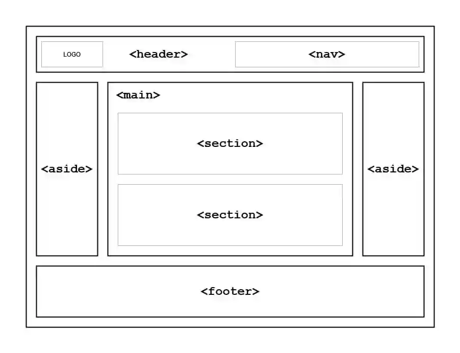
لیست تگهای مفهومی:
| tag | description |
|---|---|
| header | سرآمد هر بخش |
| nav | برای منوها و ناوبری5 در سایت استفاده میشود. |
| main | بدنه اصلی سایت |
| aside | نوارهای چپ و راست بدنه اصلی |
| section | برای بخش بدنی هر یک از تگ های مفهومی دیگر استفاده میشود |
| article | برای نمایش قسمت هایی که ممکن است در جاهای مختلف سایت نمایش داده شوند مثل پست های وبلاگ یا انجمن یا اخبار |
| footer | بخش پایینی سایت |
ol-ul-li
مخفف unordered list یعنی لیست بدون شماره از این تگ برای ایجاد لیست استفاده میشود. با تگ li اجزای این لیست را می توان اضافه کرد. برای لیست های شماره دار از تگ ol استفاده میشود. برای اجزایی مثل آیتم های لیست موجود در منوی سایت از ul استفاده میشود.
<ol>
<li>Coffee</li>
<li>Tea</li>
<li>Milk</li>
</ol>- Coffee
- Tea
- Milk
<ul>
<li>Coffee</li>
<li>Tea</li>
<li>Milk</li>
</ul>- Coffee
- Tea
- Milk
به کمک شبه المان ها میشود تغییراتی در آنها داد.
توسط خاصیت های مثل padding می توان فاصله آیتم ها از هم را تنظیم کرد.
از لیست ها برای ساخت منوهای سایت نیز می توان استفاده کرد.معمولا در ساخت منو ها خاصیت list-style-type را روی none قرار میدهند.
li {
list-style: none;
display: inline;
}
li:hover {
background-color: orange;
cursor: pointer;
}
ul {
background-color: yellow;
padding: 0;
}
<ul>
<li>Home</li>
<li>News</li>
<li>Blog</li>
<li style="float: right;">About</li>
</ul>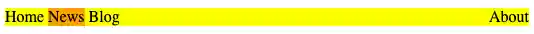
در کد بالا اگر خاصیت display را برابر با block کنیم منو تبدیل به منوی عموی خواهد شد که در پنل سمت جپ سایت ها کاربرد دارد.
مقادیر دیگری که خاصیت list-style می تواند داشته باشد:
- Disc
- Circle
- Square
- Lower-alpha
- Lower-latin
- Lower-roman
table
برای رسم جدول استفاده میشود.هر جدول دو نوع سلول دارد data و header که با دو تگ <td> برای table data و <th> برای table header مشخص می شوند. این دو نوع سلول باید در یک ردیف که با <tr> به معنی table row مشخص میشود قرار گیرند.
<table>
<tr>
<th>Name</th>
<th>Email</th>
<th colspan="2">Phone</th>
</tr>
<tr>
<td>John Doe</td>
<td>john.doe@example.com</td>
<td>123-45-678</td>
<td>212-00-546</td>
</tr>
</table>که خروجی آن به شکل زیر است:
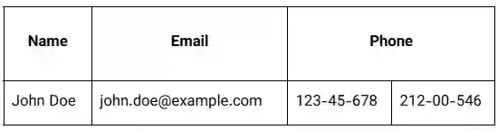
colspan (مخفف Column Span) به سلول میگوید که چند ستون را در عرض خودش پوشش دهد (اشغال کند). به عبارت دیگر، یک سلول را در چندین ستون پخش میکند.
مقدار پیشفرض: 1 (یعنی سلول فقط یک ستون را اشغال میکند)
مقدار مجاز: هر عدد صحیح مثبت (مثلاً 2، 3، 5 و …)
<table border="1">
<tbody>
<tr>
<td>A</td>
<td>B</td>
<td>C</td>
</tr>
<tr>
<td colspan="2">D</td>
<td>E</td>
</tr>
<tr>
<td>F</td>
<td colspan="2">G</td>
</tr>
</tbody>
</table>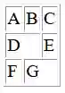
به هر یک از سلول ها یا به کل جدول می توان یک Style نسبت داد. خاصیتی به نام border-collapse داریم که باعث میشود border های سلول ها به هم بچسبند.
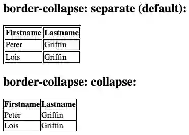
به کمک شبه کلاسها می توان برای ردیف های even یا odd استایل خاصی را اعمال کرد.این کار به کمک متد nth-child انجام میشود:
tr:nth-child(even){
background-color:silver
}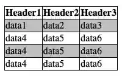
اگر به جای even بنویسیم 3n+1 به شکل زیر اعمال خواهد شد:
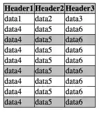
برای جداول بزرگ توصیه میشود برای اینکه در پرینت صفحات و اسکرول کردن صفحات کاربر راحت باشد سه بخش جدول (سرآمد-بدنه - پا جدول) را در سه تگ زیر قرار داد:
<thead></thead>
<tbody></tbody>
<tfoot></tfoot>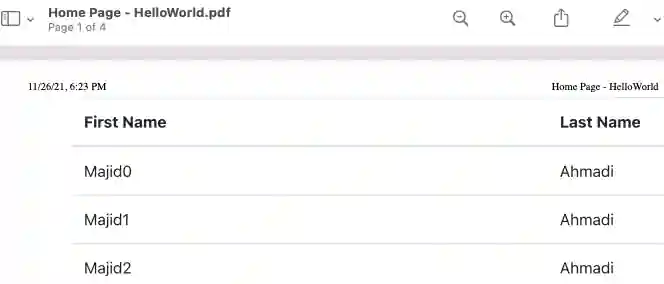
وقتی فایل بیش از یک صفحه باشد:
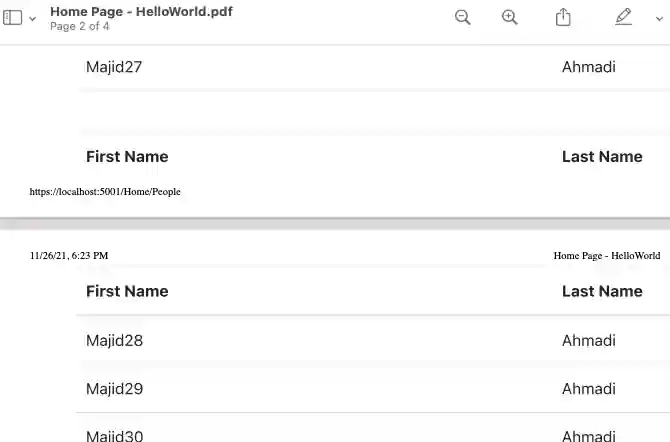
در bootstrap کلاس های table-striped و table-bordered برای شکل دهی سریع به جداول پرکاربرد هستند.
<div class="container">
<table></table>
<thead></thead>
<tbody></tbody>
<tfoot></tfoot>
<table class="table caption-top table-bordered">
<caption>
List of users
</caption>
<thead>
<tr>
<th scope="col">Name</th>
<th>Email</th>
<th colspan="2">Phone</th>
</tr>
</thead>
<tbody>
<tr>
<td>John Doe</td>
<td>john.doe@example.com</td>
<td>123-45-678</td>
<td>212-00-546</td>
</tr>
</tbody>
<tfoot>
<tr>
<td colspan="4">Address:here</td>
</tr>
</tfoot>
</table>
</div>با تگ colgroup می توان چند ستون را ادغام کرد. در کد از colgroup برای ادغام با هدف اعمال کلاس مشترک روی دو ستون آخر استفاده شده:
<table>
<caption>
Personal weekly activities
</caption>
<colgroup span="5" class="weekdays"></colgroup>
<colgroup span="2" class="weekend"></colgroup>
<thead>
<tr>
<th>Mon</th>
<th>Tue</th>
<th>Wed</th>
<th>Thu</th>
<th>Fri</th>
<th>Sat</th>
<th>Sun</th>
</tr>
</thead>
<tbody>
<tr>
<td>Clean room</td>
<td>Football training</td>
<td>Dance Course</td>
<td>History Class</td>
<td>Buy drinks</td>
<td>Study hour</td>
<td>Free time</td>
</tr>
<tr>
<td>Yoga</td>
<td>Chess Club</td>
<td>Meet friends</td>
<td>Gymnastics</td>
<td>Birthday party</td>
<td>Fishing trip</td>
<td>Free time</td>
</tr>
</tbody>
</table>table {
border-collapse: collapse;
border: 2px solid rgb(140 140 140);
}
caption {
caption-side: bottom;
padding: 10px;
}
th,
td {
border: 1px solid rgb(160 160 160);
padding: 8px 6px;
text-align: center;
}
.weekdays {
background-color: #d7d9f2;
}
.weekend {
background-color: #ffe8d4;
}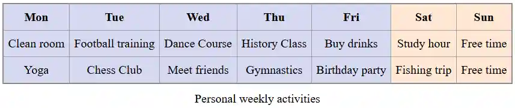
خصوصیت span در <colgroup> یک عدد صحیح مثبت دریافت میکند که نشاندهنده تعداد ستونهایی است که آن گروه شامل میشود . مثلاً
<colgroup span="5" class="weekdays"></colgroup>
<colgroup span="2" class="weekend"></colgroup>یعنی یک گروه شامل 5 ستون (روزهای هفته) و یک گروه شامل 2 ستون (تعطیلات آخر هفته).
dl dt dd
dl مخفف description list به معنی لیست توضیخات است. به همراه dt به معنی definition term و dd به معنی difinition description برای درج توضیحات درباره هر آیتم استفاده میشود.
<dl>
<dt>Coffee</dt>
<dd>Black hot drink</dd>
<dt>Milk</dt>
<dd>White cold drink</dd>
</dl>- Coffee
- Black hot drink
- Milk
- White cold drink
با استایل دهی به آن می توان مفاهیم را بهتر برای بازدید کننده تشریح کرد:
dt {
font-weight: bold;
}
dl,
dd {
font-size: 0.9rem;
}
dd {
margin-bottom: 1em;
}<dl>
<dt>Beast of Bodmin</dt>
<dd>A large feline inhabiting Bodmin Moor.</dd>
<dt>Morgawr</dt>
<dd>A sea serpent.</dd>
<dt>Owlman</dt>
<dd>A giant owl-like creature.</dd>
</dl>- Beast of Bodmin
- A large feline inhabiting Bodmin Moor.
- Morgawr
- A sea serpent.
- Owlman
- A giant owl-like creature.
Text formatting
این تگها فقط ظاهر متن رو تغییر میدهند و معنای خاصی ندارند.
| تگ | کاربرد | مثال | نتیجه |
|---|---|---|---|
| متن پررنگ (Bold) | متن پررنگ | متن پررنگ | |
| متن کج (Italic) | متن کج | متن کج | |
| متن زیرخطدار (Underline) | متن زیرخطدار | متن زیرخطدار | |
| متن کوچک | متن کوچک | متن کوچک |
img
برای درج تصویر در سایت استفاده میشود.چون محتوایی درون خود ندارد، یک تگ تهی 9 محسوب میشود؛ یعنی تگ بسته (</img>) ندارد.
<img src="/logo.png" alt="لوگوی شرکت">اگر تصویر لود نشود یا کاربر از صفحهخوان استفاده کند، متن 10 alt نمایش داده یا خوانده میشود.
توصیه می شود در آدرس فایل های محلی حتما / قید شود تا اگر سایت روی سرور قرار گرفت مشکلی در یافتن فایل به وجود نیاید. این تگ خاصیتی به نام loading دارد که در حالت پیش فرض مقدار آن eager است. در صورتی که مقدار آن روی lazy تنظیم شود فقط تصاویری دانلود میشوند که در محدوده قابل رویت یعنی viewport قرار دارند.
خاصیت title باعث می شود در صورتی که کاربر ماوس را روی تصویر نگه داشت یک tooltip نمایش داده شود.
<img src=".." title="strawberry">می توان به وسیله srcset با توجه به سایز صفحه نمایش و یا رزولوشن مشخص کرد کدام عکس باز شود.sizes به مرورگر میگوید که تصویر در چه اندازهای (بر اساس عرض صفحه) نمایش داده میشود تا مرورگر بهترین عکس را از بین لیست srcset انتخاب کند.
ویژگی decoding به مرورگر می گوید که چگونه تصویر را رمز گشایی کند. مقدار async باعث بهبود سرعت می شود.
<img
src="image-fallback.jpg"
srcset="image-small.jpg 480w, image-medium.jpg 768w, image-large.jpg 1200w"
sizes="(max-width: 600px) 100vw, 50vw"
alt="توضیح مفید و سئو شده درباره تصویر"
width="800"
height="600"
loading="lazy"
decoding="async"
>figure - figcaption
عنصر <figure> در HTML نشاندهنده محتوای مستقلی است که احتمالاً دارای یک عنوان اختیاری است که با استفاده از عنصر <figcaption> مشخص میشود. شکل، عنوان آن و محتوای آن به عنوان یک واحد واحد ارجاع داده میشوند.
figure {
border: thin silver solid;
display: flex;
flex-flow: column;
padding: 5px;
max-width: 220px;
margin: auto;
}
img {
max-width: 220px;
max-height: 150px;
}
figcaption {
background-color: #222222;
color: white;
font: italic smaller sans-serif;
padding: 3px;
text-align: center;
}معمولاً یک <figure> یک تصویر، تصویرسازی، نمودار، قطعه کد و غیره است که در جریان اصلی یک سند به آن ارجاع داده میشود، اما میتوان آن را بدون تأثیر بر جریان اصلی به بخش دیگری از سند یا به یک پیوست منتقل کرد.
یک عنوان را میتوان با قرار دادن یک <figcaption> درون عنصر <figure> (به عنوان اولین یا آخرین فرزند) به آن مرتبط کرد. اولین عنصر <figcaption> که در شکل یافت میشود، به عنوان عنوان شکل نمایش داده میشود.
<figcaption> نام قابل دسترسی برای <figure> والد را فراهم میکند.
area
به کمک این تگ می توان محدوده های قابل کلیکی در یک تصویر به وجود آورد.
<map name="infographic">
<area
shape="poly"
coords="129,0,260,95,129,138"
href="https://developer.mozilla.org/docs/Web/HTTP"
alt="HTTP" />
<area
shape="poly"
coords="260,96,209,249,130,138"
href="https://developer.mozilla.org/docs/Web/HTML"
alt="HTML" />
<area
shape="poly"
coords="209,249,49,249,130,139"
href="https://developer.mozilla.org/docs/Web/JavaScript"
alt="JavaScript" />
<area
shape="poly"
coords="48,249,0,96,129,138"
href="https://developer.mozilla.org/docs/Web/API"
alt="Web APIs" />
<area
shape="poly"
coords="0,95,128,0,128,137"
href="https://developer.mozilla.org/docs/Web/CSS"
alt="CSS" />
</map>
<img
usemap="#infographic"
src="/shared-assets/images/examples/mdn-info.png"
alt="MDN infographic" />
</map>hover mouse on image
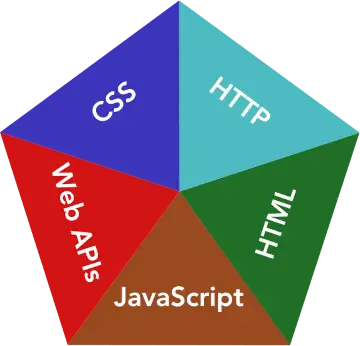
برای shape می توان از مقدار poly برای ترسیم دقیق تر استفاده کرد.
audio
برای درج پلیر صوتی در صفحه استفاده میشود.
<audio controls>
<source src="horse.ogg" type="audio/ogg">
<source src="horse.mp3" type="audio/mpeg">
Your browser does not support the audio tag.
</audio>video
برای نمایش پخش کننده فیلم:
<video width="320" height="240" controls>
<source src="movie.mp4" type="video/mp4">
<source src="movie.ogg" type="video/ogg">
<source src="movie.WebM" type="video/webm">
Your browser does not support the video tag.
</video>درج باعث controls میشود کنترل کننده های فیلم در صفحه player نمایش داده شوند.Autoplay و muted و poster موارد دیگری است که می توان استفاده کرد. Poster درواقع cover فیلم قبل از شروع نمایش آن است. خاصیتی به نام preload می توان در این تگ استفاده کرد که مشخص می کند load ویدئو بعد از زدن دکمه play شروع شود یا همزمان با باز شدن سایت cache کردن فیلم آغاز شود.مقادیر آن:
- None
- Metadata - download film preview metadata
- Auto
<video width="320" height="240" preload=”auto”>اگر autoplay را فعال کرده باشید این خاصیت بی تاثیر خواهد بود. روش دیگر استفاده از iframe است:
<iframe width="420" height="315"
src="https://www.youtube.com/embed/tgbNymZ7vqY?autoplay=1&mute=1&loop=1&playlist=tgbNymZ7vqY&controls=0">
</iframe>در url فوق بعد از علامت ؟ پارامترهای زیر که بینشان & درج شده است استفاده شده اند:
- Autoplay (for start playing after page load. Not work on chromium browsers)
- Loop (for loop video after it ends)
- Mute (for start playing muted)
- Playlist (open specific playlist)
می توان پارامترهای زیر را نیز اضافه کرد:
frameborder=0
cc_lang_pref=fa
cc_load_policy = 1
For Default caption